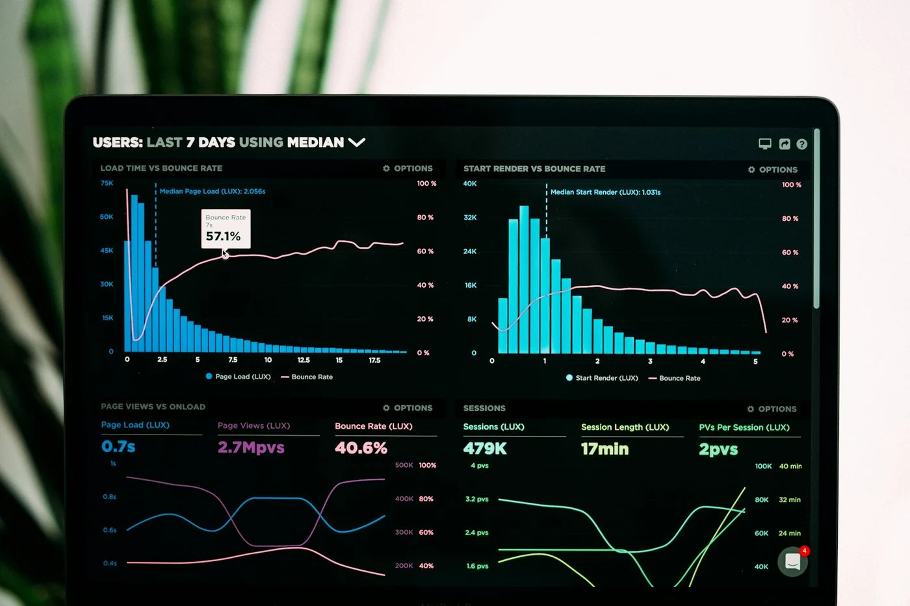

Healthcare
Healthcare
Clinical Diagnostic Assistant
Reduced report analysis time by 68% using vision models trained on anonymized radiology datasets.
View Case StudyEnd-to-end AI development — from custom neural architectures and ML pipelines to computer vision, NLP, and intelligent automation built for your industry.
We develop and deploy specialized applications designed to augment business capability and automate legacy workflows.
Custom agent architectures, generative neural networks, and semantic engines trained specifically for your enterprise dataset.
Explore ServiceScalable training pipelines, hyperparameter tuning, model version control, and predictive scoring algorithms.
Explore ServiceAdvanced statistical processing, automated report pipelines, and interactive BI dashboard deployments.
Explore ServiceIntent detection models, LLM finetuning, semantic vector searching, and contextual chatbot integrations.
Explore ServiceVisual validation algorithms, automated sorting models, and edge video surveillance analytical systems.
Explore ServiceZero-touch robotic workflow automation, API bridge synchronization, and document ingestion architectures.
Explore ServiceReal-world applications of our AI expertise — each solution tailored to industry-specific challenges and datasets.
Custom agent architectures and generative models trained on proprietary enterprise data with secure deployment pipelines.
View DetailsPredictive scoring engines for healthcare diagnostics, fraud detection, and demand forecasting at scale.
View Details
Interactive BI dashboards and automated reporting that turn raw telemetry into executive-ready insights.
View Details
LLM fine-tuning, semantic search, and contextual chatbots integrated into CRM and support workflows.
View DetailsObject detection, quality inspection, and smart city surveillance systems deployed on edge devices.
View DetailsRPA bots, document ingestion, and API bridge synchronization for zero-touch operational workflows.
View DetailsSelected deployments showcasing measurable impact across healthcare, urban tech, and enterprise automation.
Healthcare
Reduced report analysis time by 68% using vision models trained on anonymized radiology datasets.
View Case Study Smart Cities
Smart Cities
ML routing models cut peak-hour congestion by 22% across a 40-intersection pilot network.
View Case StudyAutomated 14 legacy manual processes, saving 2,400 staff hours per quarter for a logistics client.
View Case StudyA carefully calibrated transition phase that ensures models deliver expected business utility safely.
Analyzing legacy processes, available databases, and performance bottlenecks to validate AI fit.
Structuring the data pipeline, choosing target base model weights, and drafting API schema.
Iteratively training neural layers, setting up regression tests, and validating output accuracy.
Seamless cloud container deployment, log monitoring, and retraining pipelines setup.
We leverage state-of-the-art frameworks to deliver reliable, lightning-fast execution pipelines.
Choose a tier that fits your development stage, from prototype to global distribution.
Perfect for prototyping and MVPs
For production deployments
Custom setups for large scale
Got questions about our services? Find quick answers below.